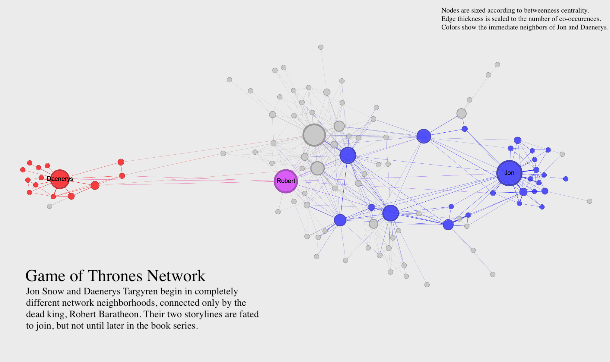
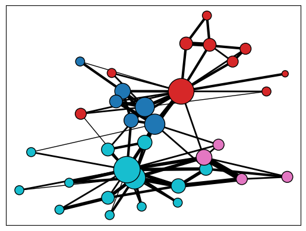

# Necessary libraries
import networkx as nx
# Read Karate Club data as example
G = nx.karate_club_graph()
print(G)Graph named "Zachary's Karate Club" with 34 nodes and 78 edgesThe practice of visualizing networks is a subset of the larger field of information visualization. As the authors of The Network Turn describe, network visualization and quantitative network analysis were developed as distinct approaches around the same time, and each approach informs the other. It’s difficult to make quantitative arguments about networks without visualizations, and it’s difficult to make visual arguments about networks without quantification. Here is a short guide to creating effective network visualizations.
Static network visualizations don’t respond to the viewer’s inputs, and they are typically single image files. They can be exploratory or explanatory, but in this class we will focus on creating explanatory visualizations that create a clear argument about a network. Here’s an example:

This visualization uses the Game of Thrones network to make an argument about characters who co-occur in the A Song of Ice and Fire novels (on which the Game of Thrones TV series is based). The visualization uses clear labels, a readable layout, and a title, caption, and key to clearly communicate its argument. Rather than trying to show all aspects of the network, the visualization focuses in on just one thing. In static visualization, you may need to create more than one visualization if you have multiple aspects of the network you want to highlight.
You can visually adjust many different parts of a network to make a compelling visualization. Here’s a list of some of the possibilities:
Dynamic visualization responds to the viewer’s inputs. In dynamic visualizations, you can click on things, move nodes around, and get more information about the network in various ways. All the principles of static visualization described above also apply to dynamic visualization. But because you can more easily show node movement and create new arrangements in a dynamic visualization, you can typically include a lot more information in a single visualization. The key to a dynamic visualization is that it allows someone to explore the network on their own. This makes it both easier and harder to communicate an argument with a dynamic visualization. There are more tools at your disposal, but the viewer also has considerable freedom.
While Gephi is a fine-grained tool for creating explanatory visualizations, you’ll often find a need for creating visualizations directly in your Python workflow, for either explanatory or exploratory purposes. NetworkX includes a robust interface for visualizing networks with matplotlib.
However, even their documentation recommends that for presentation-ready visualizations you’re best off exporting your data to a tool like Gephi. A visualization in Python is mainly useful as an intermediate step, or in instance where you’re visualizing something computationally complex (such as needing to create 10 or 20 iterations of the same visualization very quickly).
draw() and display()NetworkX has a detailed API for drawing graphs using the draw() and draw_networkx() functions. While these functions are useful for fine-grained work, they require a lot of additional code since each visual element needs to be coded and added as a separate parameter.
Alternatively the newer display() function allows you to use Graph attributes to control what the final visualization looks like. You can use the built-in Karate Club graph as an example.
Graph named "Zachary's Karate Club" with 34 nodes and 78 edgesIf called in its most basic form, the display function will try its best to create a readable visualization.
You can customize the visualization by adding specific attributes to your Graph object. The documentation for display() outlines which attributes can be updated and what they can control. For instance, adding a 'size' attribute will determine the size of the nodes, and a 'width' attribute will determine the width of the edges. Here is some code that updates some specific attributes for visualization:
# Create a size variable by scaling up the degree centrality of nodes
# You copuld do this with any kind of centrality
degree = nx.degree_centrality(G)
size = {k:v*2000 for k,v in degree.items()}
# Run louvain community detection
# Create louvain variable from resulting communities to use as node color
from networkx.algorithms.community import louvain_communities
louvain = louvain_communities(G, seed=42)
louvain = {g:i for i,group in enumerate(louvain) for g in group}
# Create a pos (position) variable and use store_pos_as to create a "pos" attribute
pos = nx.spring_layout(G, store_pos_as="pos")
# Add all attributes to graph
# Add size attribute to graph directly
nx.set_node_attributes(G, size, 'size')
# Add louvain attribute to graph and use apply_matplotlib_colors to
# convert the group to a matplotlib "color" attribute
nx.set_node_attributes(G, louvain, "louvain")
nx.apply_matplotlib_colors(G, "louvain", "color", "tab10")Running display() again after adding these attributes will alter the appearance of the visualization.
Instead of setting the default attributes, you can also tell display() which attributes to use by setting parameters within the display function. The following code will use the attributes you set above as well as some additional parameters.

With a few tweaks, you can create a compelling visualization on Python, and there’s always Gephi when you’re ready for more fine tuning.